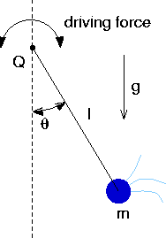

A Chaotic Pendulum in Phase Space with Java
Running Our Two Applets
- Applets take time to load and may be fragile;
be patient and gentle.
- Push start to start the animation.
- Push stop to stop the animation before its normal completion.
- Push clear to remove old graphs.
- Push rerun to repeat previous case.
- If you close or go back
on the main applet screen, the control panel will be killed.
- The speed of the simulation depends on the speed of your
computer.
- Use delay to adjust animation speed.
- Use duration to adjust number of cycles displayed.
- Applets run on Netscape 3, maybe not on others.
Next: Suggested Explorations
Back: Main Page